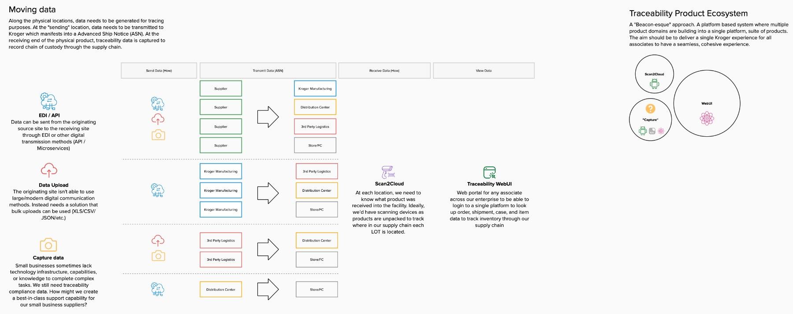
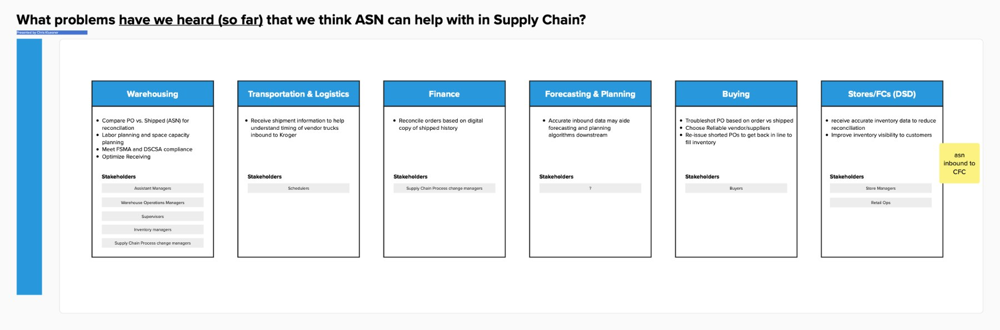
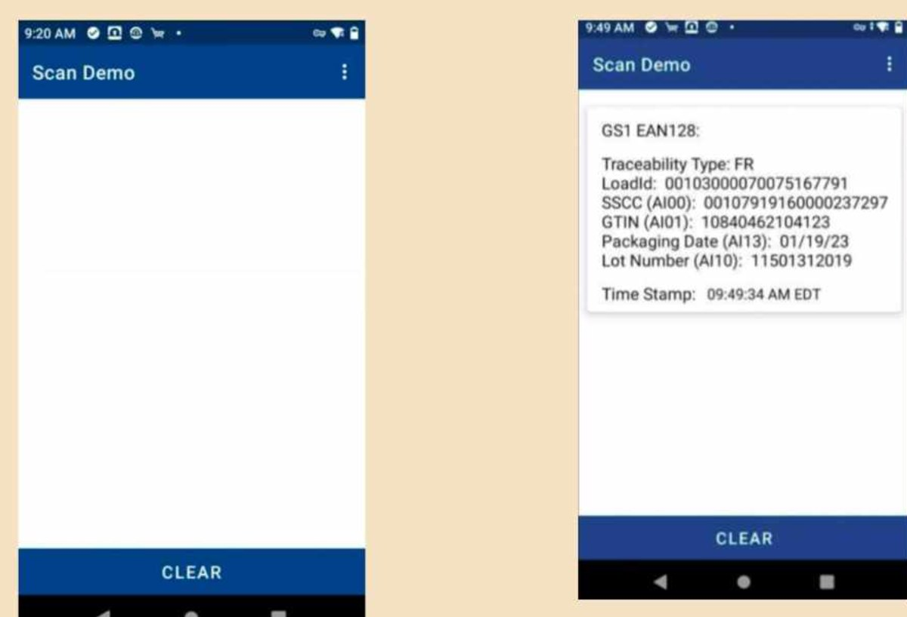
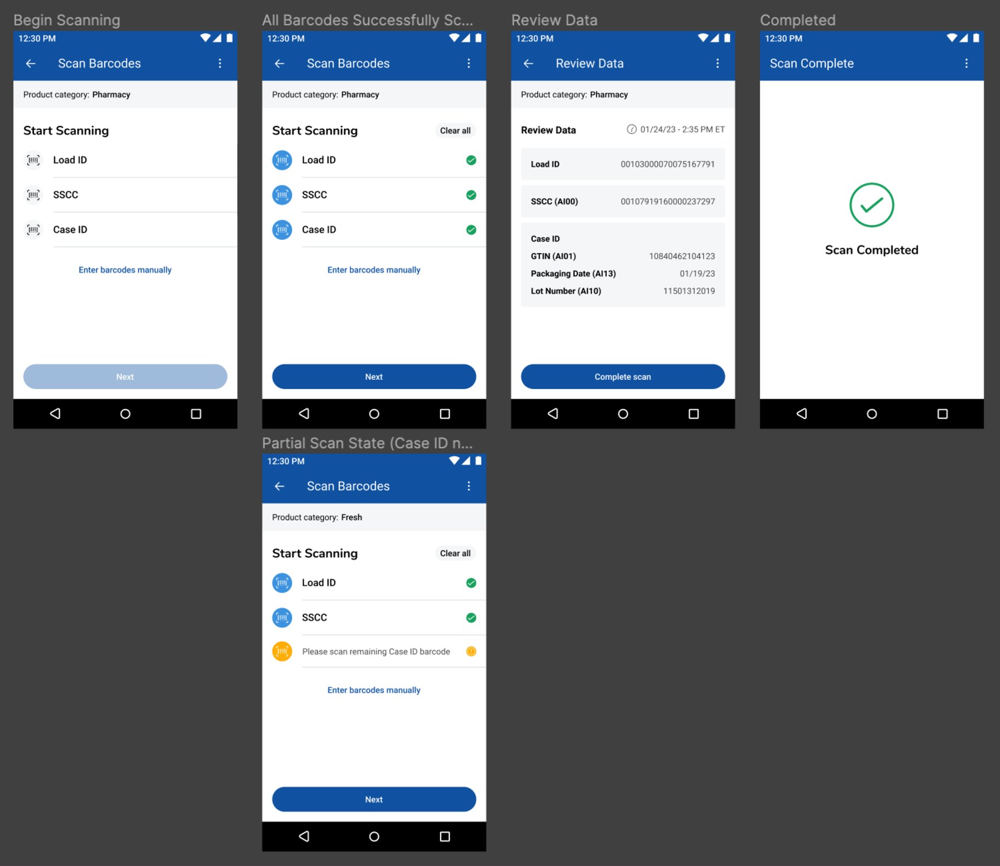
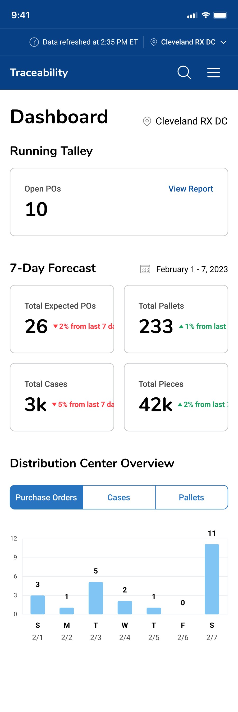
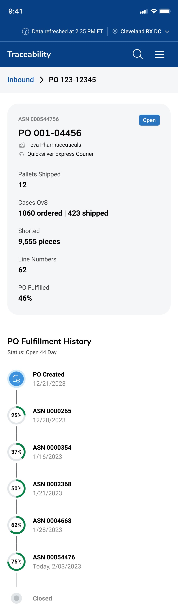

Kroger · Frontline mobile and web · Design leadership
Traceability: designing for the warehouse floor
New FDA food and drug rules meant Kroger had to trace products back to their source, which meant capturing data every time a pallet changed hands. When I saw the scanning app a vendor was building for our warehouse receivers, it was clear no designer had touched it. I made the case to move the design to my team, and we built it with the receivers who would use it.
- Role
- Senior Manager, Product Design. Directed two senior product designers, one on research and discovery and one on the app and web portal. Ran weekly design reviews and joined usability testing at a distribution center.
- Timeline
- 2023 to early 2025. The app launched at a pilot distribution center in 2025.
- Users
- Warehouse receivers on Android handheld scanners, plus distribution center, food safety and compliance teams on the web
- Products
- An Android scanning app and a responsive web portal for tracking inbound shipments
A rule that touches every handoff
FSMA 204 is the FDA’s food traceability rule. For high-risk foods like fresh produce, it requires grocers to keep records that can trace a product back to where it came from, fast, when there’s a recall. DSCSA sets similar rules for prescription drugs. Kroger started pilots for both in 2023, with fresh suppliers at one site and pharmacy suppliers at three distribution centers.
Tracing a product means connecting data that lived in different places: the purchase order, the supplier’s advance ship notice, the label on each pallet and the label on each case. Some of it came from suppliers’ systems. Some of it could only be captured by a person with a scanner at the receiving dock.
Where traceability data comes from
- OrderKroger sends the supplier a purchase order.
- ShipThe supplier sends an advance ship notice listing what’s on the truck.
- ArriveA receiver scans the pallet label at the distribution center.
- ReceiveThe receiver scans each case label, with its lot number and dates.
- ConnectThe data is matched and checked, so any product can be traced.
Staffing the discovery
Traceability started as part of inventory visibility, one of the areas my team supported. Before anyone designed a screen, we needed to understand how data moved between suppliers, systems and people. I put a senior designer with a strong research and service design background on it. He mapped how product and data move through the supply chain, and where traceability data could be sent, uploaded or captured by hand.


Discovery also showed how much was riding on the supplier side. Onboarding a single supplier to send the right shipment data took three to four months of one-on-one work, and there were more than 6,000 suppliers. I led a cross-team session to explain the basics of supplier data (EDI) and to widen the conversation: the same shipment data that met the rule could help warehousing, transportation, finance, planning and buying too.


Noticing what was missing
As the program moved into building, Kroger partnered with an outside company to build the scanning app. My designer brought me an early version, and I could tell right away that no UX designer had worked on it. The screen was blank until something was scanned. Results showed up as raw barcode data. The only action was a button labeled “Clear,” which wiped out everything that had been scanned.
Receivers would use this app on every pallet. It had to be designed for them.
I made the case to leadership that my team should own the app’s experience. It turned out to be an easy conversation, because leaders had seen the app too. I had a second senior designer coming free as another program wound down, so I put that designer on the app and the web portal part-time, while the research-focused designer kept going on discovery.


Designing for receivers
Receivers work fast, on a dock, with a handheld scanner. They need to know what to scan, whether it worked, and what’s missing, without reading a block of numbers. We reworked the flow around those needs:
- Show what’s needed. A checklist of the three labels to scan (load, pallet and case) instead of a blank screen.
- Confirm each scan. Each label checks off as it’s scanned, so progress is visible at a glance.
- Say exactly what’s missing. When a scan only partly reads, the app asks for the specific label still needed.
- Plan for damaged labels. Receivers can enter a barcode by hand when it won’t scan.
- Review before sending. Receivers check the captured data, then complete the scan, with a clear confirmation at the end.
- Make the screens easy to hit. Larger touch targets and buttons that say what they do.


Testing on the floor, in two languages
I went with my designers to a distribution center to run usability tests with receivers on the devices they’d use. Many of our receivers speak Spanish, so we tested the app with bilingual users too.
That testing backed up something I pushed hard on: Spanish support. An app that adds a required step to someone’s job has to work in the language they think in. It didn’t make the first release, but with so many bilingual receivers, everyone, including leadership, agreed it had to be a fast follow.
A web portal for everyone else
The data receivers captured had to be useful to the rest of the distribution center, and to food safety and compliance teams. We designed a responsive web portal where people could see what was arriving, follow a purchase order across several shipments, and search by shipment, order, pallet or lot.
Our design reviews kept coming back to one question: what does someone need at each level, from shipment to order to pallet to case? If they only need to see the data, the screen should make the answer obvious. If they need to act, the action belongs on that level.


A one-off app, on purpose
Ideally, traceability scanning would live inside the app receivers already used. But that receiving system was old and was being replaced. Waiting for it would have missed the regulatory deadline. So we built a standalone app to meet the rule, with a plan to fold it into the new receiving app later. The trade-off was one extra step for receivers, so we worked to make that step as quick and clear as we could.
Outcome
- Launched and well received. The app launched at a pilot pharmacy distribution center. Receivers responded well to it. It added a step to their work, but they understood it was required.
- Built for the people using it. Testing with bilingual receivers made Spanish support a committed fast follow.
- A program that outgrew its home. Traceability grew from a corner of inventory visibility into a program of its own. In a 2025 reorganization it moved to another design manager.
What I learned
- Staff discovery for the problem you have. A messy, cross-company data problem needed a research and service design mind first, not screens.
- Raise the bar early. The cheapest time to fix an engineer-designed app is before it ships. Showing leaders the gap made the decision easy.
- Go to where the work happens. Testing on the dock, with real devices and bilingual users, changed what came next on the roadmap.
- A required step still deserves good design. When people have no choice about using a tool, making it easy matters more, not less.